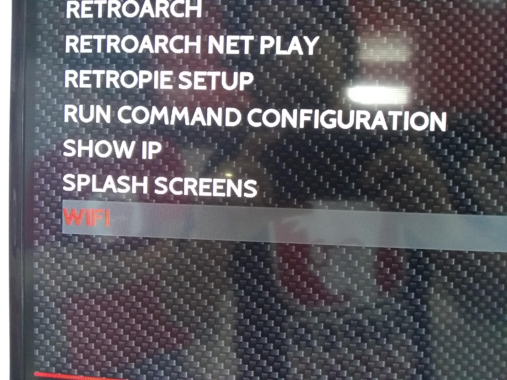
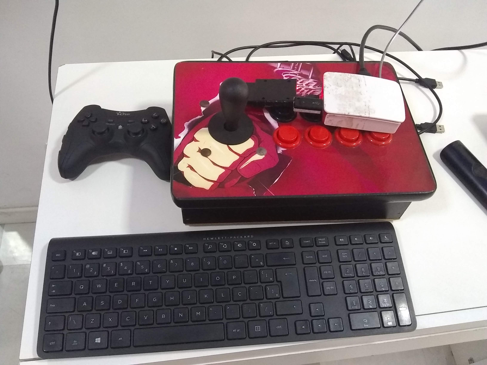

Conectando o Raspberry pi na rede
O raspberry pi pode ser conectado de duas formar na rede, a primeira forma é peloCabo de rede e a segunda é pelo Wi-Fi
Conectando por cabo de rede
A conexão por cabo de rede é a mais simples por não exigir que entre en configuração alguma, mas pode trazer problemas pois depende de um cabo físico ligado a rede da casa, Pra conectar pelo cabo de rede, apenas pegue um cabo de rede e conecte na porta certa
Conexão por Wi-Fi
A conexão por Wi-Fi não se usa o cabo físico, nela é necessário ligar na rede Wi-Fi, como se faz com celulares ou notebooks
A conexão por Wi-Fi no Retropie deve se ir na parte de configurações do mesmo e encontrar a opção de Wi-fi, nessa opção veremos a opção de conectar, assim é só escolher o nome do Wi-Fi da casa e colocar a senha, nessa hora será necessário um teclado USB para poder digitar a senha.
Após colocar conectar ao Wi-Fi ele voltará para a tela de escolha e mostrará o ip da máquina, use o controle de vide-game para escolher a opção de voltar e pronto, a rede estará configurada



Passando os Jogos para o Retropie
Para colocar os jogos no Retropie é necessário acessar as pastas de jogos pela rede, para conseguirmos isso precisamos pegar o IP do video-game, o ip fica próximo onde configuramos o Wi-fi. Na aba Retropie vá a té a opção SHOW IP, nele será mostrado um número logo no topo, com esse número poderemos acessar as pastas do Retropie
Com o número do ip, no seu computador abra o "Executar" e nele digite //númeroDoIp como na imagem

Assim abrirá as pastas do Retropie pelo computador, entre na pasta "ROMS" e dentro dela terá de forma organizada uma pasta para cada video game, você pode passar o jogo para a pasta correta, após fazer isso reinicie o Retropie e se o jogo for suportado aparecerá.
Algumas vezes o Retropie pede usuário e senha para entrar, se acontecer fica assim: user: pi password: raspberry